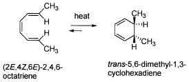
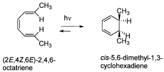
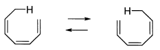
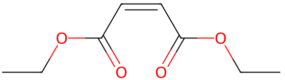

令和5年度 問2 有機化学及び燃料
ペリ環状反応に関する次の記述のうち、適切なものはどれか。
③ 共役π系の出発物が電子環状反応により環を生成する場合、出発物と生成物の分子軌道の対称性が同じであればペリ環状反応は穏やかな条件で起こる。
④ 1, 3－ブタジエン（4π電子）とマレイン酸ジエチル（2π電子）との間で起こるDiels-Alder環化反応では立体特異的にトランス二置換シクロヘキセンを生じる。
⑤ 次に示したシグマトロピー反応は［1, 5］シグマトロピー転移の例であり、スプラ形立体化学で進行する。


共役π系の出発物が電子環状反応により環を生成する場合、出発物と生成物の分子軌道の対称性が同じであればペリ環状反応は穏やかな条件で起こる。
1, 3－ブタジエン（4π電子）とマレイン酸ジエチル（2π電子）との間で起こるDiels-Alder環化反応では立体特異的にトランス二置換シクロヘキセンを生じる。
次に示したシグマトロピー反応は［1, 5］シグマトロピー転移の例であり、スプラ形立体化学で進行する。

ペリ環状反応は、π電子やσ電子が環状の遷移状態を経て1段階で結合生成する反応を意味します。代表的なものにDiels－Alder 反応が挙げられます。
ペリ環状反応は大きく次の3種類に分類されます。
- 付加環化反応：2つの不飽和分子がπ電子を用い新たなσ結合で環状に繋がる反応
- 電子環状反応：共役π電子を持つ分子の両端での開環もしくは閉環反応
- シグマトロピー転位：環状遷移状態を経て分子内でπ結合が移動し一斉に結合が組み替わる反応
1番は2, 4, 6－オクタトリエンの分子内で環化する電子環状反応です。両末端のπ分子軌道は同位相です。熱反応の場合は両軌道が逆回転（逆旋やスプラ形と呼ぶ）してσ結合を形成するため、生成する環状分子はcis体となります。
対して2番の光反応では、分子を励起するため両末端のπ分子軌道は逆移送です。両軌道が同方向に回転（同旋やアンタラ形と呼ぶ）してσ結合を形成するため、生成する環状分子はtrans体となります。
一般に同旋と逆旋は以下のように判断できます。
| π共役電子数 | 熱反応 | 光反応 |
|---|---|---|
| 4n+2 個 | 逆旋（スプラ形） | 同旋（アンタラ形） |
| 4n 個 | 同旋（アンタラ形） | 逆旋（スプラ形） |
4番のマレイン酸ジエチルはcis体の2価カルボン酸エステルです。Diels-Alder環化反応では立体構造を維持したまま反応が進むことから、シス二置換シクロヘキセンが生成します。

5番は1番目と7番目の原子の位置で結合が生成していることから［1, 7］シグマトロピー転移です。